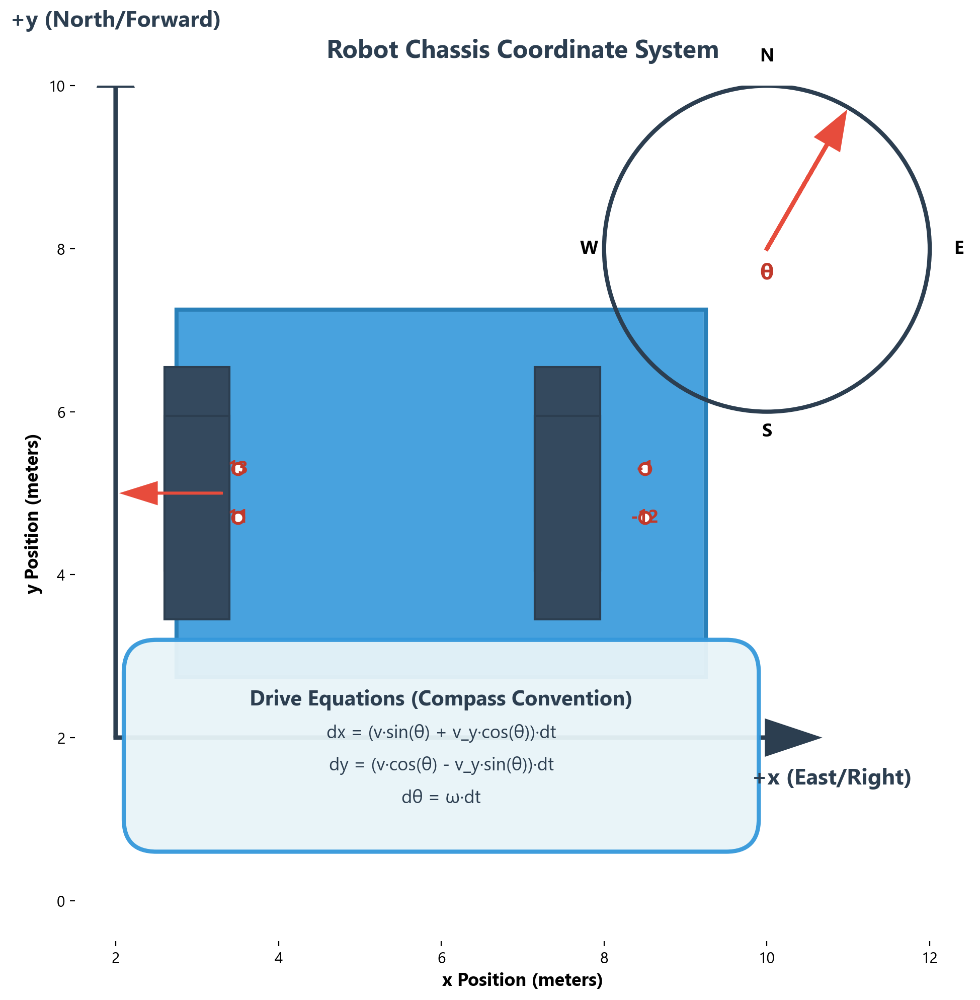
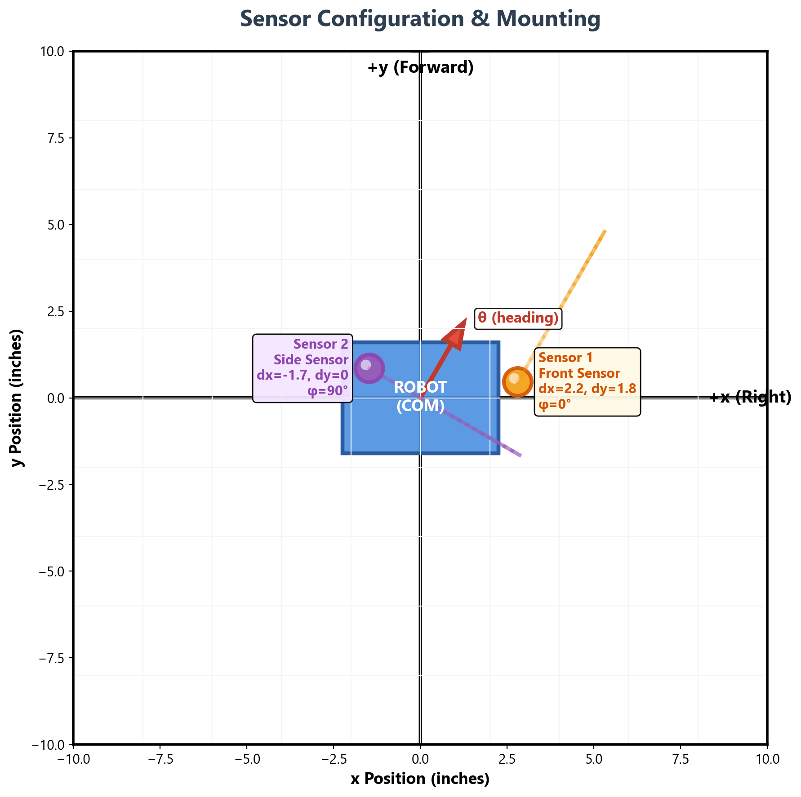
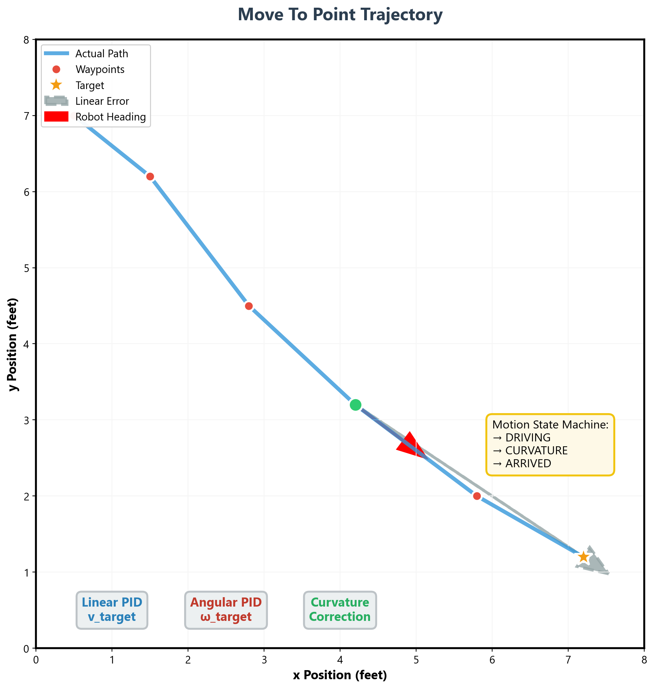
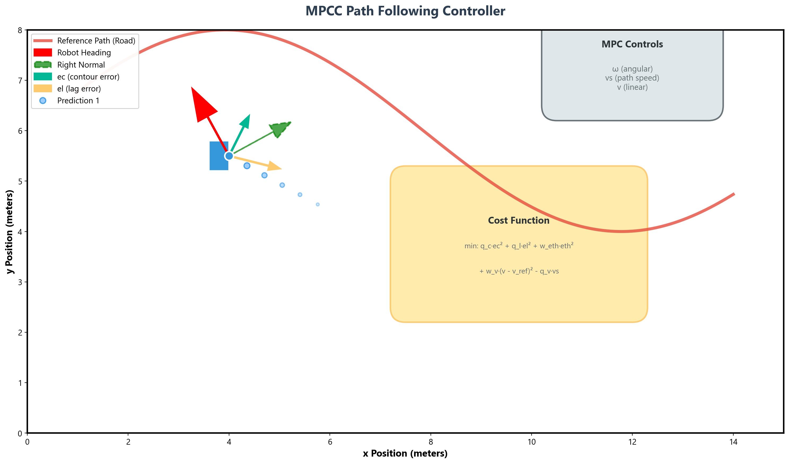

VEX V5 Motion Control System
A sophisticated robotics control stack for VEX V5 featuring model-based control, sensor fusion, and optimal path following. This system implements a complete pipeline from low-level motor control to high-level trajectory planning using Model Predictive Contouring Control (MPCC).
Super-Twisting SMC
Robust velocity control with friction feedforward and slip protection.
EKF + Particle Filter
Sensor fusion for velocity estimation and global localization.
MPCC Path Following
Model Predictive Contouring Control with acados solver.
Auto-Tuning
System identification and friction parameter optimization.
Key Features
- Physics-Based Dynamics: Motor model with resistance, torque constant, back-EMF, and Coulomb friction
- Real-Time Estimation: Extended Kalman Filter for velocity, NEON-optimized Particle Filter for position
- Sliding Mode Control: Super-twisting algorithm with integral action for robust tracking
- Optimal Control: MPCC with 20-step horizon, curvature-aware velocity adaptation
- Fast Development: Hot/cold linking for sub-second upload cycles
Project Structure
poopers123/
├── include/ # Header files
│ ├── chassis.hpp # Chassis class, motor/EKF/STSMC params
│ ├── motions/
│ │ ├── motion.hpp # MotionManager state machine
│ │ ├── mpcc_controller.hpp # MPCC solver wrapper
│ │ ├── pathplanner.hpp # Bezier path generation
│ │ ├── sysid.hpp # System ID data collection
│ │ └── utils.hpp # PID, Slew helpers
│ ├── odom/
│ │ └── odom.hpp # Particle Filter (NEON optimized)
│ └── mpcc/ # Auto-generated acados solver
├── src/
│ ├── main.cpp # Entry point, configuration
│ ├── chassis.cpp # Chassis implementation
│ └── motions/
│ ├── motion.cpp # Motion state machine
│ └── mpcc_controller.cpp # MPC implementation
├── util/
│ ├── generate_ocp.py # Generate acados solver
│ ├── sysid_fit.py # Fit motor parameters
│ └── optimize_friction.py # Optimize PF drift model
├── firmware/ # PROS kernel libraries
├── Makefile # Build system (hot/cold)
└── project.pros # PROS metadataCoordinate Conventions
Compass Heading System
The system uses compass convention: theta = 0 is North (+Y), rotating CW positive. This affects all heading calculations and sensor transformations.
- X: East direction
- Y: North direction
- Theta: 0° = North, 90° = East, 180° = South, 270° = West
Chassis Setup

Hardware Configuration
Configure your robot in main.cpp:
// Motor ports (negative = reversed)
std::vector<int> LEFT_MOTOR_PORTS = {11, 13};
std::vector<int> RIGHT_MOTOR_PORTS = {-12, -1};
// IMU port(s)
std::vector<int> IMU_PORTS = {3};
// Distance sensors (optional, for PF)
std::vector<int> DISTANCE_SENSOR_PORTS = {};
// Physical dimensions
double GEAR_RATIO = 1; // wheel:motor ratio (e.g., 48:36 = 1.333)
double WHEEL_DIAMETER = 4; // inches
double TRACK_WIDTH = 11.5; // inches (wheel-to-wheel)
pros::v5::MotorGears CARTRIDGE = pros::v5::MotorGears::green;Chassis Class Initialization
Chassis chassis(
LEFT_MOTOR_PORTS,
RIGHT_MOTOR_PORTS,
IMU_PORTS,
DISTANCE_SENSOR_PORTS,
GEAR_RATIO,
WHEEL_DIAMETER,
TRACK_WIDTH,
CARTRIDGE,
EKFConfig{...}
);Motor Parameters Structure
The MotorParams struct defines motor physics:
| Parameter | Description | Units |
|---|---|---|
| R | Motor resistance | Ohms |
| Kt | Torque constant | N*m/A |
| Ke | Back-EMF constant | V*s/rad |
| Kv | Velocity constant (= 1/Ke) | rad/s/V |
| Imax | Current limit | Amperes |
| Vmax | Voltage limit | Volts |
GainsFG Structure
Forward/Gains model parameters from system identification:
struct GainsFG {
double alpha_v; // m/s^2 per Volt (linear acceleration gain)
double alpha_w; // rad/s^2 per Volt (angular acceleration gain)
double lambda_v; // 1/s (linear drag coefficient)
double lambda_w; // 1/s (angular drag coefficient)
double max_accel_wall_v; // m/s^2 max linear accel @ 12V
double max_accel_wall_w; // rad/s^2 max angular accel @ 12V
double kS_v; // Volts (Coulomb friction - linear)
double kS_w; // Volts (Coulomb friction - angular/scrub)
};Setting Gains
chassis.set_gains({
.alpha_v = 2.36,
.alpha_w = 17.80,
.lambda_v = 20.0,
.lambda_w = 20.0,
.max_accel_wall_v = 2.36,
.max_accel_wall_w = 17.80,
.kS_v = 1.21,
.kS_w = 1.93,
});Velocity EKF
The Extended Kalman Filter estimates linear (v) and angular (ω) velocity from encoders and IMU. It provides robust estimates even during wheel slip or stall conditions.
State Model
EKF Configuration
struct EKFConfig {
double Q_v = 0.05; // Process noise (linear)
double Q_w = 0.05; // Process noise (angular)
double R_v_enc = 0.02; // Encoder measurement noise (linear)
double R_w_enc = 0.02; // Encoder measurement noise (angular)
double R_w_imu = 0.005; // IMU measurement noise (angular)
double slip_tolerance = 9.0; // Mahalanobis threshold
};Slip/Stall Protection
The EKF includes automatic slip detection:
- Wheel Spin-out: Clamps encoder velocities to physically possible accelerations
- Stall Detection: Bypasses voltage model when encoders show near-zero but voltage predicts fast motion
- Model Override: Uses simple decay model during detected slip events
Measurement Update Order
Updates are applied sequentially: IMU angular velocity → Encoder angular velocity → Encoder linear velocity. This ordering prioritizes the IMU for angular estimation.
Accessing Estimates
double v_ms = chassis.get_linear_velocity(); // m/s
double w_rads = chassis.get_angular_velocity(); // rad/s (CW positive)
// Wheel velocities (in/s, useful for PF)
double vl_ins = chassis.get_left_velocity();
double vr_ins = chassis.get_right_velocity();Particle Filter Localization
The Particle Filter provides global localization using distance sensors and odometry. It uses Monte Carlo localization with NEON SIMD optimizations for real-time performance.
Configuration
struct PFConfig {
float distance_sensor_stddev = 0.83f; // Sensor noise (inches)
float motion_distance_stddev = 0.001f; // Odometry slip noise
float kinetic_friction = 68.0f; // Drift model friction
float max_drift_speed = 41.0f; // Max lateral velocity (in/s)
float motion_heading_stddev = 0.001f; // Heading integration noise
float uniform_noise_probability = 0.0127f; // Random noise injection
float random_particle_probability = 0.005f;// Random particle injection
float resampling_threshold = 0.5f; // Distance before resample
float max_time_before_resample = 0.05f; // Time before resample
};Detailed PFConfig Parameter Guide
Each PFConfig parameter controls a specific aspect of the particle filter behavior. Proper tuning is critical for optimal localization performance.
Measurement Model Parameters
| Parameter | Description | Tuning Guidance |
|---|---|---|
distance_sensor_stddev |
Standard deviation of distance sensor noise in inches. This represents how much you trust your distance sensors. |
Low values (0.1-0.5): Trust sensors heavily - good for accurate sensors in simple environments High values (1.0-2.0): Distrust sensors - good for noisy sensors or complex environments Typical value: 0.83" (VEX ultrasonic sensors) |
Motion Model Parameters
| Parameter | Description | Tuning Guidance |
|---|---|---|
motion_distance_stddev |
Standard deviation of forward/backward motion in inches. Models how much your robot slips when driving straight. |
Low values (0.0001-0.001): Very precise motion - good for tank treads, low acceleration High values (0.01-0.1): Slippery motion - good for Mecanum wheels, high acceleration Start with: 0.001, increase if seeing tracking loss during fast maneuvers |
motion_heading_stddev |
Standard deviation of heading change in radians. Models how much error accumulates in rotation. |
Low values (0.0001-0.001): Precise rotation - good for high-quality IMU, low wheel slip High values (0.01-0.1): Uncertain rotation - good for wheel slip, poor IMU Typical value: 0.001 |
Drift Model Parameters
Drift Model Parameters
| Parameter | Description | Tuning Guidance |
|---|---|---|
kinetic_friction |
Kinetic friction coefficient for lateral drift velocity decay. Higher values = less drift. |
Low values (20-40): High drift - good for Mecanum or omni wheels High values (80-120): Low drift - good for tank drive Tuning method: Run the friction tuning script in optimize_friction.py |
max_drift_speed |
Maximum lateral drift velocity the model can produce in inches/second. |
Low values (10-20): Minimal drift - good for tank drive High values (40-60): High drift potential - good for Mecanum Tuning method: Observe actual drift during sideways motion, set 2x the observed max |
Sensor Configuration Diagram

Setup and Map
// Initialize with 500 particles
ParticleFilter pf(500, sensor_configs, pfc,
start_x, start_y, start_theta);
// Set field boundaries (example: 141" x 141" field)
std::vector<MapSegment> segs = {
{-70.5, -70.5, 70.5, -70.5}, // South wall
{70.5, -70.5, 70.5, 70.5}, // East wall
{70.5, 70.5, -70.5, 70.5}, // North wall
{-70.5, 70.5, -70.5, -70.5} // West wall
};
pf.set_map(segs);Drift Model
The particle filter includes a kinetic friction drift model for lateral velocity:
Update Loop
// In your main loop (10-20ms):
float curr_heading = chassis.get_rotation() * DEG_TO_RAD;
std::vector<float> readings = chassis.get_distance_readings();
pf.update(
curr_heading, // Current IMU heading (rad)
prev_heading, // Previous heading
chassis.get_left_velocity(), // in/s
chassis.get_right_velocity(), // in/s
readings.data(), // Distance sensor array
dt // Time step (s)
);
Estimate est = pf.estimate();
// est.x, est.y (inches), est.theta_deg (degrees), est.lateral (in/s)Sensor Configuration
struct SensorConfig {
float dx, dy; // Mounting offset from COM (inches)
float angle; // Sensor facing angle (degrees, compass convention)
};
std::vector<SensorConfig> sensors = {
{5.0, 0.0, 0.0}, // Front sensor
{-5.0, 0.0, 180.0}, // Back sensor
};NEON Optimization
The particle filter processes 4 particles simultaneously using ARM NEON SIMD. Key optimizations include vectorized sin/cos approximation and fast ray-segment intersection with spatial grid culling.
| Parameter | Description | Tuning Guidance |
|---|---|---|
kinetic_friction |
Kinetic friction coefficient for lateral drift velocity decay. Higher values = less drift. |
Low values (20-40): High drift - good for Mecanum or omni wheels High values (80-120): Low drift - good for tank drive Tuning method: Run the friction tuning script in optimize_friction.py |
max_drift_speed |
Maximum lateral drift velocity the model can produce in inches/second. |
Low values (10-20): Minimal drift - good for tank drive High values (40-60): High drift potential - good for Mecanum Tuning method: Observe actual drift during sideways motion, set 2x the observed max |
Resampling Parameters
| Parameter | Description | Tuning Guidance |
|---|---|---|
resampling_threshold |
Distance traveled (inches) before triggering particle resampling. Controls how often particles are regenerated. |
Low values (0.1-0.5): Frequent resampling - keeps particles fresh, but can lose diversity High values (1.0-3.0): Infrequent resampling - maintains particle diversity longer Typical value: 0.5" (resample every 0.5 inches of travel) |
max_time_before_resample |
Time elapsed (seconds) before triggering resampling. Safety measure for when robot is stationary. |
Low values (0.01-0.05): Quick timeout - resample frequently even when stationary High values (0.1-0.5): Slow timeout - allow particles to converge when stationary Typical value: 0.05s (50ms) |
Degeneracy Detection Parameters
| Parameter | Description | Tuning Guidance |
|---|---|---|
ess_threshold |
Effective Sample Size threshold as a fraction of total particles. ESS measures how many particles actively contribute to the estimate. |
Low values (0.3): Allow more degeneracy before forced resample High values (0.7): Resample earlier when particles converge Typical value: 0.5 (resample when ESS drops below half of particles) |
degeneracy_timeout |
Time (seconds) to wait before forcing a resample when ESS is below threshold. |
Low values (0.1-0.2): Quick recovery from degeneracy High values (0.5-1.0): Allow more time for natural recovery Typical value: 0.3s (300ms timeout) |
What is Particle Degeneracy?
When sensor measurements strongly favor certain particles, their weights become dominant while others shrink. This reduces the Effective Sample Size (ESS). A low ESS means:
- Only a few particles contribute to the estimate
- The filter becomes overconfident in a single hypothesis
- Recovery from tracking errors becomes difficult
The degeneracy detection forces a resample when ESS stays low for too long, ensuring the filter maintains particle diversity and can recover from tracking errors.
Particle Injection Parameters
| Parameter | Description | Tuning Guidance |
|---|---|---|
uniform_noise_probability |
Probability of injecting uniform random noise during measurement updates. Helps recover from kidnapping/reset. |
Low values (0.001-0.01): Conservative - rare random jumps High values (0.05-0.1): Aggressive - frequent random jumps, can destabilize tracking Typical value: 0.0127 (1.27%) |
random_particle_probability |
Probability of injecting completely random particles during resampling. Helps escape local minima. |
Low values (0.001-0.005): Rare random particles High values (0.01-0.05): More random particles, reduces tracking stability Typical value: 0.005 (0.5%) |
Particle Filter Tuning Process
- Start with reliable odometry: Before tuning the particle filter, ensure your chassis velocity EKF is well-tuned. Poor odometry inputs will make the PF underperform no matter what.
- Disable all random injections: Set
uniform_noise_probability = 0andrandom_particle_probability = 0to observe clean behavior. - Tune motion model first: Drive your robot around and watch the particle cloud. If particles spread too much, increase
motion_distance_stddevandmotion_heading_stddev. If particles converge too quickly (lose diversity and get stuck), decrease them. - Add sensor model: With distance sensors enabled, adjust
distance_sensor_stddev. Too low = particles too confident, may diverge. Too high = sensor data has minimal effect. - Calibrate drift: For robots that experience significant lateral drift (Mecanum, omni), set
kinetic_frictionandmax_drift_speedusing the provided tuning scripts. - Add randomization back: Slowly increase
uniform_noise_probabilityandrandom_particle_probabilityuntil the filter can recover from being manually moved. - Adjust resampling: If you see particle depletion (all particles at same location), decrease
resampling_threshold. If tracking is jittery, increase it.
Common Tuning Issues
Particles converge too quickly: Lower distance_sensor_stddev or increase motion_stddev parameters
Particles never converge: Increase distance_sensor_stddev or decrease motion_stddev parameters
Tracking lost during turns: Increase motion_heading_stddev to allow more rotational uncertainty
Tracking lost during acceleration: Increase motion_distance_stddev to allow more linear uncertainty
Setup and Map
// Initialize with 500 particles
ParticleFilter pf(500, sensor_configs, pfc,
start_x, start_y, start_theta);
// Set field boundaries (example: 141" × 141" field)
std::vector<MapSegment> segs = {
{-70.5, -70.5, 70.5, -70.5}, // South wall
{70.5, -70.5, 70.5, 70.5}, // East wall
{70.5, 70.5, -70.5, 70.5}, // North wall
{-70.5, 70.5, -70.5, -70.5} // West wall
};
pf.set_map(segs);Drift Model
The particle filter includes a kinetic friction drift model for lateral velocity:
Update Loop
// In your main loop (10-20ms):
float curr_heading = chassis.get_rotation() * DEG_TO_RAD;
std::vector<float> readings = chassis.get_distance_readings();
pf.update(
curr_heading, // Current IMU heading (rad)
prev_heading, // Previous heading
chassis.get_left_velocity(), // in/s
chassis.get_right_velocity(), // in/s
readings.data(), // Distance sensor array
dt // Time step (s)
);
Estimate est = pf.estimate();
// est.x, est.y (inches), est.theta_deg (degrees), est.lateral (in/s)Sensor Configuration
struct SensorConfig {
float dx, dy; // Mounting offset from COM (inches)
float angle; // Sensor facing angle (degrees, compass convention)
};
std::vector<SensorConfig> sensors = {
{5.0, 0.0, 0.0}, // Front sensor
{-5.0, 0.0, 180.0}, // Back sensor
};NEON Optimization
The particle filter processes 4 particles simultaneously using ARM NEON SIMD. Key optimizations include vectorized sin/cos approximation and fast ray-segment intersection with spatial grid culling.
System Identification
Collect motor dynamics data to fit the parameters K (gain), τ (time constant), and kS (friction).
Data Collection
Run data collection in opcontrol():
// Linear sysid (drives forward/backward)
run_linear_sysid(chassis);
// Angular sysid (spins in place)
run_angular_sysid(chassis);Excitation Signals
The sysid session runs three phases:
| Phase | Description | Purpose |
|---|---|---|
| Multi-step | Staircase of increasing voltage | DC gains |
| PRBS | Pseudo-random binary sequence | Bandwidth characterization |
| Chirp | Frequency sweep 0.1-5 Hz | Frequency response |
Offline Fitting
After collecting data (saved to SD card as sysid_linear.csv and sysid_angular.csv):
# Copy files from V5 SD card to util folder, then run:
python util/sysid_fit.py
# Or with custom filenames:
python util/sysid_fit.py sysid_linear.csv sysid_angular.csv [trackwidth(in inches)]Output Interpretation
The fitter outputs ready-to-paste code:
GainsFG gains = {
.alpha_v = 2.361798, // m/s^2/V
.alpha_w = 17.800235, // rad/s^2/V
.lambda_v = 20.000000, // 1/s
.lambda_w = 20.000000, // 1/s
.max_accel_wall_v = 2.36, // m/s^2 @ 12V
.max_accel_wall_w = 17.80, // rad/s^2 @ 12V
.kS_v = 1.2074, // V
.kS_w = 1.9308, // V
};
EKFConfig ekf_cfg = {
.Q_v = 0.070366,
.Q_w = 0.153613,
.R_v_enc = 0.000100,
.R_w_enc = 0.000100,
.R_w_imu = 0.000662,
};Important
Linear sysid measures vL and vR together (drives straight). Angular sysid measures them with opposite signs (spins in place). The track width must be accurate for angular parameters!
Friction Parameter Tuning
Optimize the particle filter's kinetic friction parameter to match actual robot drift behavior.
Data Collection
Enable logging in opcontrol():
FILE* friction_log = fopen("/usd/friction_tune.csv", "w");
fprintf(friction_log, "time,vl,vr,curr_heading,pf_x,pf_y,pf_theta\n");
// In control loop:
fprintf(friction_log, "%u,%f,%f,%f,%f,%f,%f\n",
pros::millis() - start_time,
chassis.get_left_velocity(),
chassis.get_right_velocity(),
curr_heading,
est.x, est.y, est.theta_deg * DEG_TO_RAD);
fflush(friction_log);Optimization
# Copy friction_tune.csv from V5, then:
python util/optimize_friction.py --csv friction_tune.csv
# Output:
# Optimal kinetic friction (fk): 68.0315Updating the Parameter
PFConfig pfc = {
.kinetic_friction = 68.0315, // Optimized value
// ... other params
};Physical Interpretation
The kinetic friction parameter represents the maximum lateral acceleration the robot can experience before the wheels break traction. Higher values mean more drift during turns. Typical values: 30-100 depending on wheel type and carpet.
Velocity Controller (STSMC)
The Super-Twisting Sliding Mode Controller provides robust velocity tracking with friction feedforward.
STSMC Parameters
struct STSMCParams {
double Lambda[2] = {1.2, 1.2}; // Sliding surface gain
double K1[2] = {6.5, 6.5}; // Proportional gain
double K2[2] = {12.0, 12.0}; // Integral gain
double s_eps = 0.01; // Smoothing boundary
double z_max[2] = {12.0, 12.0}; // Integrator limits (Volts)
double Imax_per_side = 5.0; // Current limit
};Detailed STSMC Parameter Guide
Each STSMC parameter controls a specific aspect of the sliding mode controller. Proper tuning ensures fast, accurate velocity tracking without oscillations.
Sliding Surface Parameters
| Parameter | Description | Tuning Guidance |
|---|---|---|
Lambda[2] |
Sliding surface gain for linear and angular velocity. Controls how aggressively the controller reacts to velocity errors. |
Low values (0.5-1.0): Soft response - may be too slow for fast maneuvers High values (2.0-5.0): Aggressive response - fast tracking, may oscillate Typical value: 1.2 Tuning: Increase until you see slight oscillation, then reduce by 20% |
Controller Gains
| Parameter | Description | Tuning Guidance |
|---|---|---|
K1[2] |
Proportional gain in the super-twisting algorithm. Controls the main control action. |
Low values (2.0-4.0): Gentle control - may not overcome friction High values (8.0-15.0): Strong control - fast response, may chatter Typical value: 6.5 Tuning: Increase until step response has minimal overshoot |
K2[2] |
Integral gain in the super-twisting algorithm. Helps reject disturbances and steady-state error. |
Low values (5.0-10.0): Slow integral action - may leave offset High values (15.0-25.0): Fast integral action - good disturbance rejection Typical value: 12.0 Tuning: Set 1.5-2.0x higher than K1 for good disturbance rejection |
Smoothing and Saturation
| Parameter | Description | Tuning Guidance |
|---|---|---|
s_eps |
Boundary layer thickness for smoothing the sign function. Prevents chattering in the control signal. |
Low values (0.001-0.005): Hard switching - may cause chattering High values (0.02-0.05): Soft switching - smoother control Typical value: 0.01 Tuning: Increase if you hear motor buzzing/humming at steady state |
z_max[2] |
Integrator limit in Volts. Prevents integrator windup from large disturbances. |
Low values (6.0-8.0): Conservative - safe but may limit performance High values (12.0-15.0): Aggressive - good for large disturbances Typical value: 12.0 Setting: Set to your maximum motor voltage (typically 12V) |
Imax_per_side |
Current limit per motor side in Amperes. Hardware protection. |
Typical values: 2.5A (small robots) to 5.0A (big robots) Setting: Set to 20% below your motor's rated current |
STSMC Tuning Process
- Start with the provided default values for your robot size. These are generally good starting points.
- Tune Lambda first: Perform step velocity commands. Increase Lambda until you see slight oscillation, then reduce by 20%. Too low Lambda = sluggish response. Too high Lambda = oscillation.
- Tune K1 for response speed: With Lambda fixed, increase K1 until step response has minimal overshoot. Too low K1 = slow response. Too high K1 = overshoot and chatter.
- Tune K2 for disturbance rejection: Set K2 = 1.5 × K1 initially. Apply external disturbances (push the robot). Increase K2 if the robot doesn't recover quickly. Too high K2 = oversensitive to noise.
- Adjust s_eps for smoothness: If motors buzz at steady-state, increase s_eps. If response is too soft, decrease s_eps.
- Set z_max and Imax per side: Based on your motor limits. These are safety parameters.
Common Tuning Issues
Motors buzz/hum at steady state: Increase s_eps to smooth the controller
Slow response to velocity commands: Increase Lambda and/or K1
Overshoot on velocity steps: Decrease K1 or increase s_eps
Can't hold speed under load: Increase K2 for better disturbance rejection
Oscillations: Decrease Lambda or increase s_eps
Control Law
Feedback Linearization
// Desired acceleration from SMC + feedforward:
xdot_des = v_ref_dot + λ·v_ref + u_st
// Inverse dynamics:
uL = xdot_v / α_v + xdot_w / α_w
uR = xdot_v / α_v - xdot_w / α_wFriction Feedforward
- Coulomb Friction: Add ±kS_v based on wheel direction
- Scrub Friction: Scale by turn ratio for curved paths
Tuning Guidelines
| Parameter | Effect | Tuning Direction |
|---|---|---|
| Lambda | Sliding surface sensitivity | Higher = faster tracking, more noise |
| K1 | Reaching speed | Higher = faster convergence |
| K2 | Integral action | Higher = eliminates steady-state error |
| s_eps | Boundary layer | Higher = smoother, less chattering |
Integrator Leakage
When target velocity is 0, the integrator leaks to decay to 0 in ~0.5 seconds. This prevents "brake creep" where accumulated integral causes slow drift when stopped.
Move to Point

Simple point-to-point navigation using PID control with pure pursuit steering.
PointTarget Configuration
struct PointTarget {
double x, y; // Target position (inches)
double max_v = 50.0; // Maximum velocity (in/s)
double min_v = 2.0; // Minimum velocity (in/s)
double slew = 1.0; // Acceleration limit (in/s per 10ms)
bool reversed = false; // Drive backward
PIDCoeffs linear_pid; // Distance controller
double steering_gain = 1.5;
double tolerance = 1.0; // Exit radius (inches)
double exit_turn_dist = 4.0;
double integral_limit = 0;
};Usage Example
// PID configuration
PIDCoeffs linear_pid = {4.0, 0, 0.5}; // P=4, I=0, D=0.5
// Move to point
PointTarget target;
target.x = 36.0;
target.y = 48.0;
target.max_v = 80.0;
target.slew = 2.0;
target.linear_pid = linear_pid;
target.tolerance = 1.0;
motions.moveTo(target);
motions.waitUntilPoint(36, 48, 1.0);Pure Pursuit Steering
The steering law computes curvature from angle error:
Turn to Angle
TurnTarget turn;
turn.target_theta = 90.0; // Face East
turn.direction = TurnTarget::Direction::NEAREST;
turn.max_v = 300.0; // 300 deg/s max
turn.slew = 6.0;
turn.angular_pid = {4.0, 0, 0.5};
motions.turnTo(turn);
motions.waitUntilAngle(90, 1.0);Turn to Point
// Face a specific coordinate
motions.turnToPoint(36, 48, TurnTarget::Direction::RIGHT,
angular_pid, 360.0, 8.0);Blocking Waits
// Wait until within margin of point
motions.waitUntilPoint(x, y, margin_inches);
// Wait until within margin of angle
motions.waitUntilAngle(theta, margin_degrees);
// Wait until pose matches
motions.waitUntilPose(x, y, theta, pos_margin, theta_margin);
// Wait until traveled distance
motions.waitUntilDistance(distance_inches);MPCC Path Following

Model Predictive Contouring Control (MPCC) for smooth path tracking. Uses a simplified formulation with Euclidean position error, cross-track error, and a continuous heading cost that avoids the ±180° wrap discontinuity. The controller includes a friction-based drift model for realistic turning behavior.
State and Control
| State (x) | Description | Units |
|---|---|---|
| x, y | Position | meters |
| θ | Heading | radians |
| vy | Lateral velocity (drift) | m/s |
| s | Path progress | meters |
| Control (u) | Description | Units |
|---|---|---|
| v | Forward velocity | m/s |
| ω | Angular velocity | rad/s |
| vs | Progress speed | m/s |
Weights Configuration
struct Weights {
// Tracking weights
double q_pos = 10.0; // Position error (Euclidean distance)
double q_heading = 5.0; // Heading error (continuous formula)
double q_cross = 8.0; // Cross-track error (sideways from path)
double q_vy = 4.0; // Lateral velocity penalty
// Progress reward
double q_progress = 2.0; // Linear progress reward
// Control rate penalties
double w_dv = 5.0; // dv/dt penalty
double w_dw = 5.0; // dw/dt penalty
double w_dvs = 3.0; // dv_s/dt penalty
// Velocity tracking
double w_v = 6.0; // Velocity tracking weight
double v_ref = 0.8; // Target velocity (m/s)
// Terminal weights
double q_pos_N = 20.0; // Terminal position weight
double q_heading_N = 10.0; // Terminal heading weight
double q_cross_N = 16.0; // Terminal cross-track weight
double q_vy_N = 8.0; // Terminal lateral velocity weight
// Trust region & adaptation
double s_trust = 0.3; // Half-width (meters)
double kappa_threshold = 4.0; // Curvature adaptation threshold
};Control Bounds
struct ControlBounds {
double v_min = 0.0; // m/s
double v_max = 1.5;
double w_min = -2.5; // rad/s
double w_max = 2.5;
double vs_min = 0.0; // m/s
double vs_max = 2.0;
};PathTarget Configuration
PathTarget target;
// Waypoints (inches) - field coordinates
target.waypoints = {
{-31.9, 45.7}, // Start
{-31.9, 55.1}, // Intermediate
{-2.0, 59.0},
{16.3, 58.8},
{29.1, 46.2},
{21.8, 45.6} // End
};
// MPC weights (simplified formulation)
target.weights.q_pos = 20.0; // Position error weight
target.weights.q_heading = 10.0; // Heading error weight
target.weights.q_cross = 8.0; // Cross-track error weight
target.weights.q_progress = 0.5; // Progress reward
target.weights.v_ref = 1.2; // Target velocity (m/s)
target.weights.kappa_threshold = 4.0; // Curvature adaptation
// Control bounds
target.mpc_control_bounds.v_max = 1.0;
target.mpc_control_bounds.w_max = 10.0;
// Other settings
target.tolerance = 1.0; // Exit radius (inches)
target.intake_offset = 7.0; // Distance to intake (inches)
target.v_target_end = 0.0; // End velocity (in/s)
target.log_mpc_to_sd = true; // Enable SD logging
motions.followPath(target);
motions.waitUntilPathDone();Cost Function
Where:
- ||p - pr|| = Euclidean distance to reference position (linear cost for smooth degradation)
- h(θ, θr) = Continuous heading cost: (cos θ - cos θr)² + (sin θ - sin θr)² (no wrap discontinuity!)
- ec = Cross-track error (signed distance perpendicular to path)
- vy = Lateral velocity (drift)
- -qprogress·vs = Progress reward (encourages forward motion)
Continuous Heading Cost
The heading error uses a wrap-safe formulation:
// Instead of (theta - theta_ref)² which has discontinuity at ±180°
// We use: (cos(th) - cos(ref))² + (sin(th) - sin(ref))²
// This equals 2(1 - cos(error)) which is smooth everywhere!Curvature-Based Adaptation
The MPC automatically adapts behavior based on path curvature (κ):
// Adaptive target velocity (slower in curves)
v_safe = v_ref / (1 + 0.5 * kappa / kappa_threshold)
// Adaptive cross-track weight (tighter following in curves)
q_cross_adaptive = q_cross * (1 + kappa / kappa_threshold)- High curvature: Reduced target speed, increased cross-track weight for tighter path following
- Low curvature: Full speed, normal cross-track weight for efficiency
Progress Tracking
The controller fuses prediction with projection:
// Prediction from previous control
s_predicted = current_s + |u_prev.v| * dt;
// Projection from position (using intake offset)
s_projected = projectSFromPosition(xi, yi, s_hint);
// Fused estimate (clamped correction)
s_fused = s_predicted + clamp(s_proj - s_pred, -0.15, +0.15);MPCC Weight Tuning Guide
Quick Start
| Parameter | Effect | Typical Range |
|---|---|---|
q_pos | Overall position tracking | 10-50 |
q_heading | Heading alignment | 5-20 |
q_cross | Path accuracy (vs speed) | 8-30 |
q_progress | Forward motion incentive | 0.5-5 |
v_ref | Target speed (m/s) | 0.5-1.5 |
Position vs Cross-Track
- High q_pos, Low q_cross: Robot prioritizes reaching the point, may cut corners
- Low q_pos, High q_cross: Robot stays on path but may slow down
- Balanced: q_cross ≈ q_pos for smooth, accurate following
Heading Weight
- High q_heading: Robot turns aggressively to match path heading (good for precise maneuvers)
- Low q_heading: More gradual turns, smoother motion
Progress Reward
- Too high: Robot rushes forward, may overshoot corners
- Too low: Robot may stop or move too slowly
Control Rate Penalties
- High w_dv, w_dw: Smoother control transitions, less aggressive acceleration
- Low values: Snappier response, but may cause wheel slip or jerk
Trust Region (s_trust)
Soft constraint preventing the solver from "cheating" progress:
- Too narrow: Robot struggles to recover from disturbances
- Too wide: May allow large position tracking errors
- Typical: 0.2-0.5 meters
Acados Solver
Drift Model (Lateral Velocity)
The MPC includes a friction-based lateral velocity model:
// Drift dynamics: vy decays with friction, increases during turns
vy_next = vy - centripetal_contribution - friction_decay
// Centripetal force creates drift during turns
centripetal = v * w * dt // from centripetal acceleration
// Friction coefficient (fk) determines drift magnitude
// Higher fk = more drift in turns (slippery surface)
// Lower fk = less drift (high traction)Tuning fk (Friction)
- fk = 0.3: Typical carpet/foam tile (default)
- fk = 0.5+: Slippery surface, more drift
- fk = 0.1: High traction, minimal drift
Calibrate by observing robot behavior during turns - if the robot drifts more than predicted, increase fk.
Solver Configuration
- Horizon: N = 25 nodes
- Timesteps: 10×0.01s + 15×0.02s = 0.4s total
- Solver: SQP-RTI (Real-Time Iteration)
- QP Solver: PARTIAL_CONDENSING_HPIPM
Regenerating the Solver
If you need to modify the OCP structure:
# Edit util/generate_ocp.py, then:
python util/generate_ocp.py
# This generates:
# - include/mpcc/acados_solver_mpcc.h
# - mpcc model/cost functionsPath Planner
Converts discrete waypoints into smooth cubic Bezier curves for the MPC to follow.
Bezier Segment Structure
struct BezierSegment {
PathVec2 p0, p1, p2, p3; // Control points
double length; // Arc length
};Path Generation
PathPlanner planner;
// Set waypoints (in meters for internal use)
std::vector<PathVec2> wps = {
{x1, y1},
{x2, y2},
{x3, y3}
};
planner.setWaypoints(wps);
double total_length = planner.getTotalLength(); // meters
Pose pose = planner.getPose(s); // Get pose at progress sPose Structure
struct Pose {
double x; // Position X (meters)
double y; // Position Y (meters)
double theta; // Heading (radians, compass)
};Algorithm Details
- 2 waypoints: Single segment with 1/3 and 2/3 control points
- >2 waypoints: Thomas algorithm for C1 continuity (smooth tangent)
- Arc length: 5-point Gauss quadrature integration
- Pose lookup: O(1) after segment search
C1 Continuity
The planner solves a tridiagonal system to ensure the tangent vector is continuous at waypoint boundaries:
API Reference
Chassis
| Method | Description | Returns |
|---|---|---|
update() |
Run EKF update cycle | void |
velocity_control(v_ref, w_ref, dt) |
STSMC velocity control | void |
tank(left_v, right_v) |
Direct voltage control (millivolts) | void |
get_linear_velocity() |
Estimated v | in/s |
get_angular_velocity() |
Estimated ω | rad/s |
get_rotation() |
IMU heading | degrees |
reset_sensors() |
Zero all encoders and IMU | void |
set_gains(GainsFG) |
Set dynamics model | void |
set_stsmc_gains(STSMCParams) |
Set controller params | void |
ParticleFilter
| Method | Description | Returns |
|---|---|---|
update(h, h_prev, vl, vr, readings, dt) |
PF update cycle | void |
estimate() |
Get weighted mean | Estimate |
set_map(segments) |
Set field boundaries | void |
reset(x, y, theta) |
Reset particles | void |
MotionManager
| Method | Description | Returns |
|---|---|---|
moveTo(PointTarget) |
Start point-to-point | void |
turnTo(TurnTarget) |
Start turn | void |
turnToPoint(x, y, dir, pid, max_v, slew) |
Face coordinate | void |
followPath(PathTarget) |
Start MPC path | void |
cancelMotion() |
Stop all motion | void |
isDone() |
Check completion | bool |
waitUntilPoint(x, y, margin) |
Blocking wait | void |
waitUntilPathDone() |
Wait for MPC | void |
loop() |
Main update loop | void |
MPCC_Controller
| Method | Description | Returns |
|---|---|---|
setPath(waypoints_m) |
Load path (meters) | void |
setWeights(Weights) |
Set cost weights | void |
setControlBounds(ControlBounds) |
Set u limits | void |
runStep(state, prev_u) |
Solve one MPC step | Control |
getPathLength() |
Total path length | meters |
getPathPoseAtS(s) |
Reference pose | Pose |
projectSFromPosition(x, y, hint) |
Find closest s | meters |
Configuration Checklist
1. Hardware Setup
- Configure motor ports (negative for reversed)
- Set IMU port(s)
- Add distance sensors if using PF
- Measure track width accurately
- Measure wheel diameter
2. System Identification
- Run
run_linear_sysid(chassis) - Run
run_angular_sysid(chassis) - Copy CSV files from SD card
- Run
sysid_fit.py - Paste output into
main.cpp
3. Friction Tuning
- Add logging to opcontrol
- Drive patterns (figure-8s work well)
- Run
optimize_friction.py - Update
kinetic_frictionin PFConfig
4. Controller Tuning
- Start with default STSMCParams
- If overshooting: increase K1, K2
- If sluggish: decrease Lambda
- If oscillating: increase s_eps
5. MPC Tuning
- Start with provided weights
- If cutting corners: increase q_cross
- If lagging behind: increase q_progress
- If oscillating: increase w_dv, w_dw
- If not reaching end: increase terminal weights
Test Sequence
- Test
chassis.tank()directly - Test
velocity_control()with constant references - Test
moveTo()with simple points - Test
followPath()with straight line - Add curves and verify tracking
Troubleshooting
Robot Not Moving
- Check motor ports match physical connections
- Verify IMU is calibrated (check
imu.is_installed()) - Check
set_gains()was called - Ensure
motion_taskis running
Oscillating/Vibrating
- Increase
s_epsin STSMCParams - Decrease
Lambdavalues - Check EKF noise params (Q_v, Q_w too small?)
- Verify motor cartridge matches configuration
Not Reaching Target
- Check tolerance values
- Verify PID coefficients are reasonable
- Check for slip (reduce max_v)
- Ensure PF is initialized correctly
MPC Not Following Path
- Check
intake_offsetis correct - Verify waypoints are in correct coordinate system
- Check control bounds are achievable
- Enable SD logging and analyze CSV
Particle Filter Diverging
- Check start position matches reality
- Verify map segments are correct
- Check sensor configs (mounting positions)
- Reduce
kinetic_frictionif drifting too much
Build Errors
- Run
make cleanthenmake quick - Check third-party includes are installed
- Verify acados is built for ARM Cortex-A9
- Check PROS kernel version
Common Error Messages
| Error | Cause | Solution |
|---|---|---|
| PROS_ERR_F returned | Motor/IMU not connected | Check port configuration |
| Solver status != 0 | MPC infeasible | Relax bounds or check initial state |
| nan in velocity | Numerical instability | Check EKF params, reduce gains |